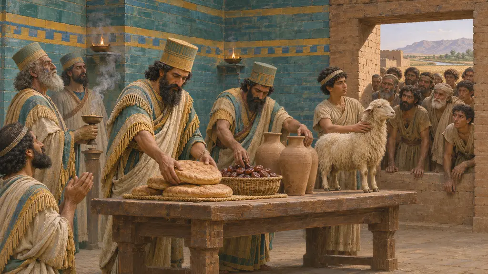
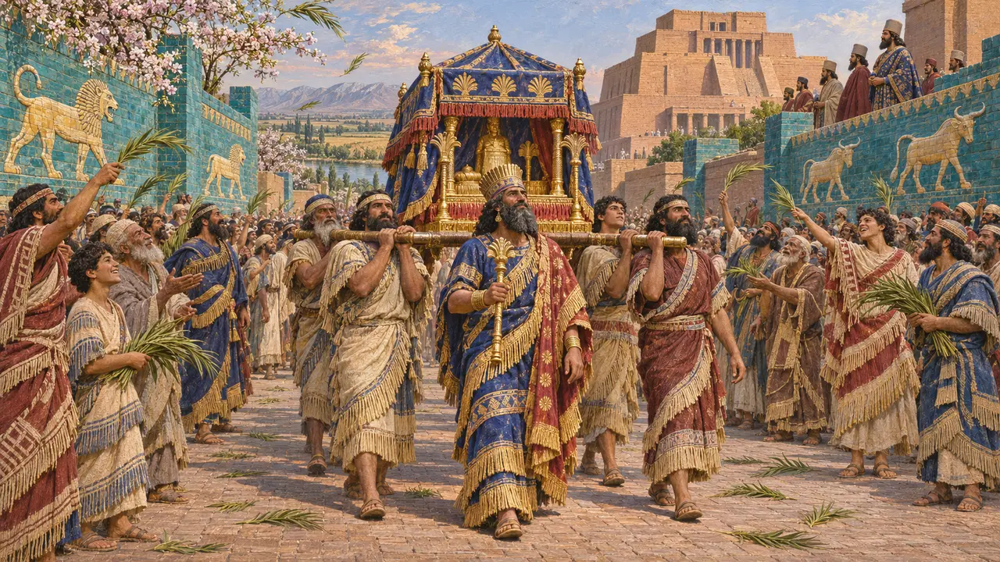

Ansiklopedi › Tanrılar ve bayramlar

Kyros Silindiri'nde Kyros'u seçen Marduk'un kendisidir. Silindiri onun rahipleri yazdı. Eski bir tapınağın yeni bir kralla nasıl uzlaştığına dair en iyi kanıt, Kyros'un neye inandığına dair ise en kötü kanıttır.
Oyunda: Susa'daki Babilli tuğla ustaları bir Marduk Tapınağı ve Akitu ister. Marduk'un sofrası onların gönlünü yükselten ayindir.

Marduk'un seçtiği
BelgelerdeSilindir, Marduk'un adil bir kral için bütün ülkeleri aradığını ve Kyros'un elinden tuttuğunu söyler. Kyros'un yurtlarından edilmiş tanrıları tapınaklarına geri getirdiğini söyler. Babil gözleri için Babil biçiminde yazılmış olan silindir, Pers dini hakkında hiçbir şey söylemez ve bir haklar bildirgesi değildir.
Cyrus Cylinder (BM 90920) 11-12, 32

Nisannu'da yılbaşı
BelgelerdeAkitu, ilkbaharda Nisannu ayının ilk on iki gününde yapılırdı. Marduk'un heykeli alayla şehir dışındaki Akitu evine götürülürdü. Nabonidus Kroniği, kral yokken bayramın yapılmadığından yıllarca yakınır.
Nabonidus Chronicle; Kuhrt 2007

Pers kralları onun elini tuttu mu?
TartışmalıKronik, Kambyses'i 538 yılbaşında Babil'de gösterir ve eski kitaplar bunu bir Akitu sayardı. Kuhrt ve Sherwin-White bunu bir göreve getirme olarak okur ve kralın hazır bulunduğu kesin bir Pers dönemi Akitu'su bulamaz. Aynı makale, Kserkses'in Babil tapınaklarını yıktığı öyküsünün Yunan kaynaklı olduğunu savunur; Boiy ise buna kurgu der.
Nabonidus Chronicle iii 24-28; Kuhrt and Sherwin-White 1987; Boiy 2004
Kaynaklar
- Cyrus Cylinder
- Nabonidus Chronicle
- Kuhrt and Sherwin-White 1987
- Boiy 2004